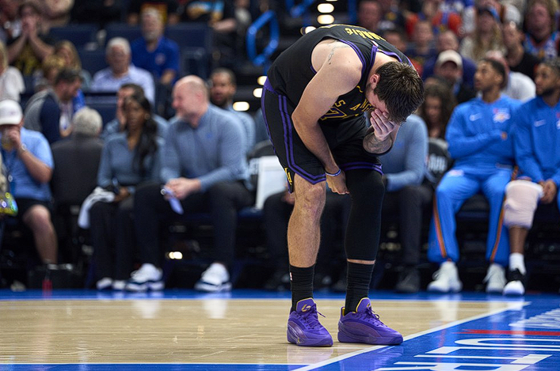

Luka Doncic sentiu uma lesão na coxa esquerda no segundo tempo da derrota por 139 a 96 para o Oklahoma City Thunder.
O armador tentou uma infiltração contra Jalen Williams, mas parou bruscamente antes do que parecia ser um arremesso, deixando a bola cair e levando a mão até a coxa.
A equipe ainda não divulgou mais informações sobre a saúde do armador, que passará por uma ressonância magnética nesta sexta-feira.

Doncic sente lesão contra o Thunder — Foto: Cooper Neill/Getty Images
Forte candidato na disputa pelo MVP da temporada, Luka Doncic sentiu uma lesão na partida da última quinta-feira e pode ficar fora da corrida pelo prêmio. Segundo a imprensa internacional, Doncic sofreu uma distensão na coxa esquerda, no segundo tempo da derrota por 139 a 96 para o Oklahoma City Thunder. A equipe ainda não divulgou mais informações sobre a saúde do armador, que passará por uma ressonância magnética nesta sexta-feira.
Doncic sentiu a lesão sozinho no terceiro quarto da partida, quando o Thunder vencia por mais de 30 pontos. O armador tentou uma infiltração contra Jalen Williams, mas parou bruscamente antes do que parecia ser um arremesso, deixando a bola cair e levando a mão até a coxa. Depois de ficar no chão por um minuto, Doncic saiu mancando para o vestiário, visivelmente abalado e com dores. Confira abaixo:
A derrota para o Thunder interrompeu uma sequência de quatro vitórias seguidas para os Lakers. Shai Gilgeous-Alexander foi o cestinha da partida, com 28 pontos, 7 assistências e 7 rebotes. Em pouco mais de 25 minutos em quadra, Doncic anotou 12 pontos. LeBron somou 13, enquanto Austin Reaves teve 15 pontos para os Lakers. Depois do jogo, LeBron lamentou o resultado e a lesão de Doncic:
— Eles nos surraram essa noite desde o início. Nunca tem um momento para ficar confortável nessa liga. A única coisa que sabemos é que não vamos estar no play-in, então temos aquela semana de folga. Mas saúde é riqueza. Já estamos sem o Marcus e agora sem o Luka. Não sabemos quanto tempo ainda. A gente vai ver — disse.
Dependendo da gravidade da lesão, Doncic pode perder a disputa pelo MVP e ficar fora do início dos playoffs, que começam no dia 18 de abril. O esloveno marcou 600 pontos só no mês passado e tem uma média de 33,8 pontos por jogo, a maior da liga, além de 7,8 rebotes e 8,3 assistências por noite. Segundo o técnico JJ Redick, o astro fará uma ressonância magnética nesta sexta-feira.
Os Lakers voltam à quadra contra o Dallas Mavericks, antiga equipe de Doncic, no domingo, às 20h30 (de Brasília). Mesmo com a derrota, estão isolados no terceiro lugar da Oeste. Líder da tabela, o Thunder encara o Jazz no mesmo dia, às 20h.
Por João Pedro Oliveira da Silva — Rio de Janeiro
03/04/2026 05h055